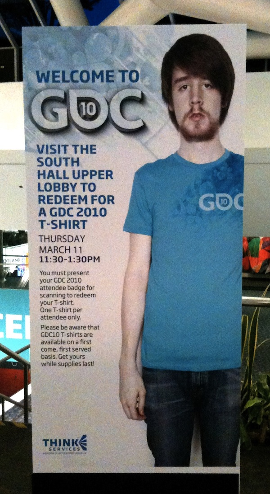

GDC t-shirt excitement
2011-03-27 01:52:54
status: inherit
author: Bryan

Guys, you're really not selling me on this shirt!
I see two main possibilities here.
1: The folks in charge of getting us excited about a free GDC t-shirt couldn't be bothered to get the shirt model similarly excited.
2: The folks in charge of getting us excited about a free GDC t-shirt are using the shirt ad as a subtle commentary on the nature of conference-goer aesthetics, swag, or the nature of advertising in general.
Please advise.
Comments: